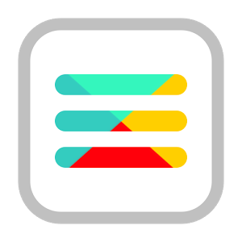

<template name="mainLayout">

<head>
  <style>
      /* The side navigation menu */
    .sidenav {
      height: 100%; /* 100% Full-height */
      width: 0; /* 0 width - change this with JavaScript */
      position: fixed; /* Stay in place */
      z-index: 1; /* Stay on top */
      top: 0;
      left: 0;
      background-color: #111; /* Black*/
      overflow-x: hidden; /* Disable horizontal scroll */
      padding-top: 60px; /* Place content 60px from the top */
      transition: 0.5s; /* 0.5 second transition effect to slide in the sidenav */
    }

    /* The navigation menu links */
    .sidenav a {
      padding: 8px 8px 8px 32px;
      text-decoration: none;
      font-size: 25px;
      color: #818181;
      display: block;
      transition: 0.3s
    }

    /* When you mouse over the navigation links, change their color */
    .sidenav a:hover, .offcanvas a:focus{
      color: #f1f1f1;
    }

    /* Position and style the close button (top right corner) */
    .sidenav .closebtn {
      position: absolute;
      top: 0;
      right: 25px;
      font-size: 36px;
      margin-left: 50px;
    }

    /* Style page content - use this if you want to push the page content to the right when you open the side navigation */
    #main {
      transition: margin-left .5s;
      padding: 20px;
    }

    /* On smaller screens, where height is less than 450px, change the style of the sidenav (less padding and a smaller font size) */
    @media screen and (max-height: 450px) {
      .sidenav {padding-top: 15px;}
      .sidenav a {font-size: 18px;}
    }

  </style>
  ethPhoto
</head>
  {{> navbar}}
  <main>
    <div id="mySidenav" class="sidenav" style="z-index:1">
      <a href="javascript:void(0)" class="closebtn" onclick="closeNav()">&times;</a>
      <a href="#">Upload</a>
      <a href="#">Browse by Topic</a>
      <a href="#">Browse by Location</a>
      <a href="#">Browse by User</a>
    </div>
  <span onclick="openNav()"></span>
  <script>
      /* Set the width of the side navigation to 250px and the left margin of the page content to 250px and add a black background color to body */
      function openNav() {
          document.getElementById("mySidenav").style.width = "300px";
          document.getElementById("main").style.marginLeft = "250px";
          document.body.style.backgroundColor = "rgba(0,0,0,0.4)";
      }

      /* Set the width of the side navigation to 0 and the left margin of the page content to 0, and the background color of body to white */
      function closeNav() {
          document.getElementById("mySidenav").style.width = "0";
          document.getElementById("main").style.marginLeft = "0";
          document.body.style.backgroundColor = "white";
      }
  </script>
    <div class = "row">
		    <div>
			       {{>map}}
		    </div>
  	</div>
  	<div class= "row">
	    {{>Template.dynamic template=content}}
	    {{>browse}}
	  </div>
  </main>
</template>
